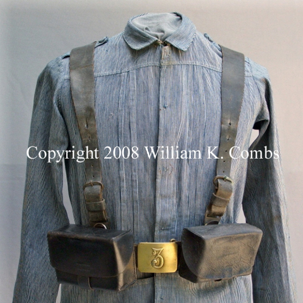

The History of the T-Shirt

The history of the T-shirt dates back to the late 19th century, although it wasn't called a "T-shirt" back then. Its origins can be traced to the one-piece union suit underwear worn by soldiers during the Spanish-American War (1898). These undergarments evolved into separate top and bottom pieces, with the top resembling what we recognize today as a T-shirt.

However, it wasn't until the early 20th century that the modern T-shirt as we know it began to emerge. In the early 1900s, the U.S. Navy issued crew-necked, short-sleeved cotton undershirts to be worn under uniforms. These were called "T-shirts" due to their T shape when laid flat.
The term "T-shirt" was officially coined in the 1920s. It gained popularity among laborers as a comfortable and lightweight option for work attire. It wasn't until the 1950s, though, that the T-shirt entered mainstream fashion. Marlon Brando famously wore one in "A Streetcar Named Desire" (1951), and James Dean popularized it in "Rebel Without a Cause" (1955), contributing to its status as a symbol of rebellion and youthful nonconformity.
Throughout the latter half of the 20th century, the T-shirt continued to evolve, becoming a canvas for self-expression, advertising, and political statements. The 1960s saw tie-dye and screen printing techniques applied to T-shirts, reflecting the countercultural movements of the time. Band T-shirts, souvenir T-shirts, and graphic tees became increasingly popular in the following decades, solidifying the T-shirt's place as a staple in both fashion and culture.
Today, T-shirts are ubiquitous and come in various styles, materials, and designs, serving as a versatile garment worn for both casual and formal occasions. They remain a key element of fashion and continue to reflect societal trends and individual identities.